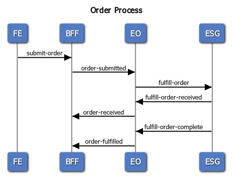

Example – end-to-end relay
Let's pull this all together with an end-to-end example of a typical ordering process of an e-commerce system. At the highest level, the system receives an order, forwards the order to a third-party order-management system, and receives order status updates. The system is built using our cloud-native patterns.
We have a frontend (FE) application that submits orders to its BFF component. The BFF component emits the order-submitted event type and consumes the order-received and order-fulfilled event types to track the order status. These two pieces are owned by the same team. Another team owns the external service gateway (ESG) component that encapsulates the interactions with the third-party order management system. This component consumes the fulfill-order event type and emits fulfill-order-received and fulfill-order-complete event types. A third team owns the order process event orchestration component (EO) that is responsible for orchestrating the events between the BFF and ESG components. These event flows are shown in the following sequence diagram:

To enhance the example, the team responsible for building the ESG component is scheduled to start building the component well after the BFF team has completed their initial experiment. As a result, the EO team will initially simulate interaction with the ESG component for the time being. This demonstrates the power and flexibility of bounded isolated components and the incremental nature of transitive testing. When the ESG component is eventually added, only the EO component will need to be updated. The EO component will assert that its contract with the BFF component is still intact, but the BFF component will not need to be enhanced, nor its tests executed.
The test engineers of the various teams will coordinate to define the concrete set of end-to-end test scenarios that will be implemented by the teams. The teams will implement the scenarios incrementally as the functionality is implemented. Initially, the teams will implement the plumbing of the scenarios and then rerecord and distribute the payloads as the functionality evolves, and add additional scenarios as appropriate. The following examples demonstrate the plumbing. Again, as mentioned previously, focus on the baton, not the runners. The plumbing is fairly boilerplate; the real details are in the data payloads (that is, the baton) and the possibly numerous permutations. Following the guidance of the test automation pyramid, all the permutations will be tested at the unit level. At the end-to-end level, we only need enough coverage to have sufficient confidence that the components are working together properly.